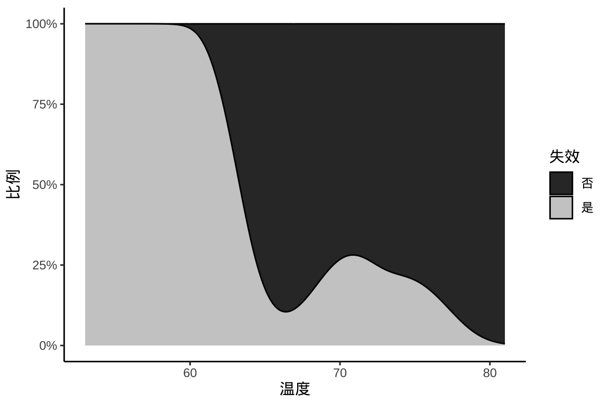

34 广义线性模型
34.1 生成模拟数据
先介绍泊松广义线性模型，包括模拟和计算，并和 Stan 实现的结果比较。
泊松广义线性模型如下：
\[ \begin{aligned} \log(\lambda) &= \beta_0 + \beta_1 x_1 + \beta_2 x_2 \\ Y &\sim \mathrm{Poisson}(u\lambda) \end{aligned} \]
设定参数向量 \(\beta = (\beta_0, \beta_1, \beta_2) = (0.5, 0.3, 0.2)\)，观测变量 \(X_1\) 和 \(X_2\) 的均值都为 0，协方差矩阵 \(\Sigma\) 为
\[ \left[ \begin{matrix} 1.0 & 0.8 \\ 0.8 & 1.0 \end{matrix} \right] \]
模拟观测到的响应变量值和协变量值，添加漂移项
34.2 拟合泊松模型
拟合泊松回归模型
fit_poisson_glm <- glm(y ~ X, family = poisson(link = "log"), offset = log(u))
summary(fit_poisson_glm)#>
#> Call:
#> glm(formula = y ~ X, family = poisson(link = "log"), offset = log(u))
#>
#> Coefficients:
#> Estimate Std. Error z value Pr(>|z|)
#> (Intercept) 0.488932 0.009427 51.86 <2e-16 ***
#> X1 0.289984 0.014298 20.28 <2e-16 ***
#> X2 0.214846 0.014420 14.90 <2e-16 ***
#> ---
#> Signif. codes: 0 '***' 0.001 '**' 0.01 '*' 0.05 '.' 0.1 ' ' 1
#>
#> (Dispersion parameter for poisson family taken to be 1)
#>
#> Null deviance: 6052.9 on 2499 degrees of freedom
#> Residual deviance: 2675.5 on 2497 degrees of freedom
#> AIC: 10773
#>
#> Number of Fisher Scoring iterations: 4# 对数似然函数值
log_poisson_lik <- logLik(fit_poisson_glm)
# 计算 AIC AIC(fit_poisson_glm)
-2 * c(log_poisson_lik) + 2 * attr(log_poisson_lik, "df")#> [1] 10772.79下面用 Stan 编码泊松回归模型，模型代码如下：
data {
int<lower=1> k;
int<lower=0> n;
matrix[n, k] X;
array[n] int<lower=0> y;
vector[n] log_offset;
}
parameters {
vector[k] beta;
real alpha;
}
model {
target += std_normal_lpdf(beta);
target += std_normal_lpdf(alpha);
target += poisson_log_glm_lpmf(y | X, alpha + log_offset, beta);
}
generated quantities {
vector[n] log_lik; // pointwise log-likelihood for LOO
vector[n] y_rep; // replications from posterior predictive dist
for (i in 1 : n) {
real y_hat_i = alpha + X[i] * beta + log_offset[i];
log_lik[i] = poisson_log_lpmf(y[i] | y_hat_i);
y_rep[i] = poisson_log_rng(y_hat_i);
}
}Stan 代码主要分三部分：
数据部分
data：声明模型的输入数据，数据类型、大小、约束。参数部分
parameters：类似数据部分，声明模型的参数，参数类型、大小。模型部分
model：指定模型参数的先验分布。生成量
generated quantities：拟合模型获得参数估计值后，计算一些统计量。
下面准备数据
编译模型，抽样获取参数的后验分布
# 加载 cmdstanr 包
library(cmdstanr)
# 编译模型
mod_poisson <- cmdstan_model(
stan_file = "code/poisson_log_glm.stan",
compile = TRUE,
cpp_options = list(stan_threads = TRUE)
)
# 采样拟合模型
fit_poisson_stan <- mod_poisson$sample(
data = poisson_d, # 观测数据
init = inits_data, # 迭代初值
iter_warmup = 1000, # 每条链预处理迭代次数
iter_sampling = 2000, # 每条链总迭代次数
chains = nchains, # 马尔科夫链的数目
parallel_chains = 1, # 指定 CPU 核心数，可以给每条链分配一个
threads_per_chain = 1, # 每条链设置一个线程
show_messages = FALSE, # 不显示迭代的中间过程
refresh = 0, # 不显示采样的进度
seed = 20222022 # 设置随机数种子，不要使用 set.seed() 函数
)
# 迭代诊断
fit_poisson_stan$diagnostic_summary()#> $num_divergent
#> [1] 0 0 0 0
#>
#> $num_max_treedepth
#> [1] 0 0 0 0
#>
#> $ebfmi
#> [1] 1.1424219 0.9995611 1.0849789 1.0899448#> # A tibble: 4 × 10
#> variable mean median sd mad q5 q95 rhat ess_bulk
#> <chr> <dbl> <dbl> <dbl> <dbl> <dbl> <dbl> <dbl> <dbl>
#> 1 alpha 0.489 0.489 0.00934 0.00909 0.474 5.04e-1 1.00 4391.
#> 2 beta[1] 0.290 0.290 0.0142 0.0144 0.266 3.13e-1 1.00 3312.
#> 3 beta[2] 0.215 0.215 0.0142 0.0147 0.192 2.38e-1 1.00 3440.
#> 4 lp__ -5388. -5388. 1.19 0.979 -5390. -5.39e+3 1.00 3301.
#> # ℹ 1 more variable: ess_tail <dbl>34.3 参数后验分布
加载 bayesplot 包，bayesplot 包提供一系列描述数据分布的绘图函数，比如绘制散点图 mcmc_scatter() 。\(\beta_1\) 和 \(\beta_2\) 的联合分布
library(ggplot2)
library(bayesplot)
mcmc_scatter(fit_poisson_stan$draws(c("beta[1]", "beta[2]")), size = 1) +
theme_classic() +
labs(x = expression(beta[1]), y = expression(beta[2]))如果提取采样的数据，也可使用 ggplot2 包绘图，不局限于 bayesplot 设定的风格。
beta_df <- fit_poisson_stan$draws(c("beta[1]", "beta[2]"), format = "draws_df")
ggplot(data = beta_df, aes(x = `beta[1]`, y = `beta[2]`)) +
geom_density_2d_filled() +
facet_wrap(~.chain, ncol = 2) +
theme_classic() +
labs(x = expression(beta[1]), y = expression(beta[2]))\(\beta_1\) 和 \(\beta_2\) 的热力图
mcmc_hex(fit_poisson_stan$draws(c("beta[1]", "beta[2]"))) +
theme_classic() +
labs(x = expression(beta[1]), y = expression(beta[2]))各个参数的轨迹图
mcmc_trace(fit_poisson_stan$draws(c("beta[1]", "beta[2]")),
facet_args = list(
labeller = ggplot2::label_parsed, strip.position = "top", ncol = 1
)
) +
theme_classic()
可以将模型参数的后验分布图展示出来
mcmc_dens(fit_poisson_stan$draws(c("beta[1]", "beta[2]")),
facet_args = list(
labeller = ggplot2::label_parsed, strip.position = "top", ncol = 1
)
) +
theme_classic()后验分布的中位数、80% 区间
mcmc_areas(fit_poisson_stan$draws(c("beta[1]", "beta[2]")), prob = 0.8) +
scale_y_discrete(labels = scales::parse_format()) +
theme_classic()岭线图就是将各个参数的后验分布图放在一起。
mcmc_areas_ridges(x = fit_poisson_stan$draws(), pars = c("beta[1]", "beta[2]")) +
scale_y_discrete(labels = scales::parse_format()) +
theme_classic()参数的 \(\hat{R}\) 潜在尺度收缩因子
后验预测诊断的想法是检查根据拟合模型生成的随机数 \(y^{rep}\) 与真实观测数据 \(y\) 的接近程度。为直观起见，可以用一系列描述数据分布的图来可视化检验。
# mcmc_scatter(fit_poisson_stan$draws(),
# pars = c("beta[1]", "beta[2]"),
# np = nuts_params(fit_poisson_stan)
# )
mcmc_nuts_energy(x = nuts_params(fit_poisson_stan), binwidth = 1) +
ggtitle(label = "NUTS Energy Diagnostic")y 是真实数据，yrep 是根据贝叶斯拟合模型生成的数据。下图是真实数据的密度图和50组生成数据的密度图。
# 抽取 yrep 数据
yrep <- fit_poisson_stan$draws(variables = "y_rep", format = "draws_matrix")
pp_check(y, yrep = yrep[1:50, ], fun = ppc_dens_overlay) +
theme_classic()观察后验预测区间与真实数据的覆盖情况，不妨取前 50 次观测的数据，即 y[1:50] 与第 2 个自变量 X[1:50, 2] ，基于后验分布的 500 次采样数据绘制 50% 后验置信区间。
34.4 模型评估指标
loo 包可以计算 WAIC
fit_poisson_waic <- loo::waic(fit_poisson_stan$draws(variables = "log_lik"))
print(fit_poisson_waic)#>
#> Computed from 8000 by 2500 log-likelihood matrix.
#>
#> Estimate SE
#> elpd_waic -5386.3 37.7
#> p_waic 2.9 0.1
#> waic 10772.6 75.5loo 包推荐使用 LOO-CV ，它还提供诊断信息、有效样本量和蒙特卡罗估计。
#>
#> Computed from 8000 by 2500 log-likelihood matrix.
#>
#> Estimate SE
#> elpd_loo -5386.3 37.7
#> p_loo 2.9 0.1
#> looic 10772.6 75.5
#> ------
#> MCSE of elpd_loo is 0.0.
#> MCSE and ESS estimates assume MCMC draws (r_eff in [0.4, 1.3]).
#>
#> All Pareto k estimates are good (k < 0.7).
#> See help('pareto-k-diagnostic') for details.34.5 可选替代实现
对于常见的统计模型，rstanarm 和 brms 包都内置了预编译的 Stan 程序，下面用 brms 包的函数 brm() 拟合带上述漂移项的泊松广义线性模型，参数估计结果和 Base R 函数 glm() 的几乎一致，因编译和抽样的过程比较花费时间，速度不及 Base R。
# brms
dat <- data.frame(y = y, X = X, u = u)
colnames(dat) <- c("y", "x1", "x2", "u")
fit_poisson_brm <- brms::brm(y ~ x1 + x2 + offset(log(u)),
data = dat, family = poisson(link = "log")
)
fit_poisson_brm Family: poisson
Links: mu = log
Formula: y ~ x1 + x2 + offset(log(u))
Data: dat (Number of observations: 2500)
Draws: 4 chains, each with iter = 2000; warmup = 1000; thin = 1;
total post-warmup draws = 4000
Population-Level Effects:
Estimate Est.Error l-95% CI u-95% CI Rhat Bulk_ESS Tail_ESS
Intercept 0.49 0.01 0.47 0.51 1.00 2509 2171
x1 0.29 0.01 0.26 0.32 1.00 1771 1645
x2 0.21 0.01 0.19 0.24 1.00 1727 1847
Draws were sampled using sampling(NUTS). For each parameter, Bulk_ESS
and Tail_ESS are effective sample size measures, and Rhat is the potential
scale reduction factor on split chains (at convergence, Rhat = 1).调用函数 brm() 拟合模型后返回一个 brmsfit 对象 fit_poisson_brm，brms 包提供很多函数处理该数据对象，比如 brms::loo() 计算 LOO-CV
Computed from 4000 by 2500 log-likelihood matrix
Estimate SE
elpd_loo -5386.3 37.8
p_loo 2.9 0.1
looic 10772.6 75.5
------
Monte Carlo SE of elpd_loo is 0.0.
All Pareto k estimates are good (k < 0.5).
See help('pareto-k-diagnostic') for details.输出结果中， LOO IC 信息准则 Loo information criterion，looic 指标的作用类似频率派模型中的 AIC 指标，所以也几乎相同的。
34.6 案例：吸烟喝酒和食道癌的关系
本例数据集 esoph 来自 Base R 内置的 datasets 包，是法国伊勒-维莱讷食道癌研究数据，研究吸烟、喝酒与食道癌的关系，量化酒精、烟草、酒精和烟草的交互作用。部分数据集见 表格 34.1 ，年龄组 agegp、酒精量 alcgp 和烟草量 tobgp 为有序的分类变量，正常来说，年龄越大，吸烟、喝酒对食道癌影响越大。
| 年龄组 | 酒精量 | 烟草量 | 实验组 | 控制组 |
|---|---|---|---|---|
| 25-34 | 0-39g/day | 0-9g/day | 0 | 40 |
| 25-34 | 0-39g/day | 10-19 | 0 | 10 |
| 25-34 | 0-39g/day | 20-29 | 0 | 6 |
| 25-34 | 0-39g/day | 30+ | 0 | 5 |
| 25-34 | 40-79 | 0-9g/day | 0 | 27 |
| 25-34 | 40-79 | 10-19 | 0 | 7 |
34.6.1 描述分析
先来简单统计一下各年龄组、酒精量组的食道癌发病人数
#> , , = ncases
#>
#> alcgp
#> agegp 0-39g/day 40-79 80-119 120+
#> 25-34 0 0 0 1
#> 35-44 1 4 0 4
#> 45-54 1 20 12 13
#> 55-64 12 22 24 18
#> 65-74 11 25 13 6
#> 75+ 4 4 2 3
#>
#> , , = ncontrols
#>
#> alcgp
#> agegp 0-39g/day 40-79 80-119 120+
#> 25-34 61 45 5 4
#> 35-44 88 76 20 6
#> 45-54 77 61 27 2
#> 55-64 77 62 19 8
#> 65-74 60 28 16 2
#> 75+ 23 8 0 0图 34.11 描述食道癌发病率与年龄组、酒精量的关系
library(ggplot2)
aggregate(cbind(ncases, ncontrols) ~ agegp + alcgp, data = esoph, sum) |>
ggplot(aes(x = agegp, y = alcgp, fill = ncases / (ncases + ncontrols))) +
scale_fill_viridis_c(labels = scales::percent_format()) +
geom_tile() +
labs(x = "年龄组", y = "酒精量", fill = "发病率")34.6.2 拟合模型
响应变量服从二项分布，自变量包含年龄分组 agegp、酒精量 alcgp、烟草量 tobgp 和 酒精量与烟草量的交互作用，建立广义线性模型。
模型输出
#>
#> Call:
#> glm(formula = cbind(ncases, ncontrols) ~ agegp + tobgp * alcgp,
#> family = binomial(link = "logit"), data = esoph)
#>
#> Coefficients:
#> Estimate Std. Error z value Pr(>|z|)
#> (Intercept) -1.16933 0.20767 -5.631 1.79e-08 ***
#> agegp.L 3.97135 0.69286 5.732 9.94e-09 ***
#> agegp.Q -1.58715 0.61943 -2.562 0.0104 *
#> agegp.C 0.09866 0.47331 0.208 0.8349
#> agegp^4 0.09950 0.32816 0.303 0.7617
#> agegp^5 -0.27067 0.21516 -1.258 0.2084
#> tobgp.L 1.10809 0.27042 4.098 4.17e-05 ***
#> tobgp.Q 0.26586 0.25419 1.046 0.2956
#> tobgp.C 0.29394 0.24026 1.223 0.2212
#> alcgp.L 2.42627 0.28829 8.416 < 2e-16 ***
#> alcgp.Q 0.12999 0.25418 0.511 0.6091
#> alcgp.C 0.36600 0.22252 1.645 0.1000
#> tobgp.L:alcgp.L -0.42942 0.58589 -0.733 0.4636
#> tobgp.Q:alcgp.L 0.33676 0.56764 0.593 0.5530
#> tobgp.C:alcgp.L -0.15742 0.54313 -0.290 0.7719
#> tobgp.L:alcgp.Q 0.04169 0.53027 0.079 0.9373
#> tobgp.Q:alcgp.Q -0.62384 0.50922 -1.225 0.2205
#> tobgp.C:alcgp.Q -0.06700 0.48120 -0.139 0.8893
#> tobgp.L:alcgp.C -0.25088 0.47211 -0.531 0.5951
#> tobgp.Q:alcgp.C 0.02303 0.44197 0.052 0.9584
#> tobgp.C:alcgp.C -0.17340 0.40908 -0.424 0.6717
#> ---
#> Signif. codes: 0 '***' 0.001 '**' 0.01 '*' 0.05 '.' 0.1 ' ' 1
#>
#> (Dispersion parameter for binomial family taken to be 1)
#>
#> Null deviance: 367.953 on 87 degrees of freedom
#> Residual deviance: 76.886 on 67 degrees of freedom
#> AIC: 233.94
#>
#> Number of Fisher Scoring iterations: 6整理模型输出后，见 表格 34.2
| term | estimate | std.error | statistic | p.value |
|---|---|---|---|---|
| (Intercept) | -1.1693289 | 0.2076675 | -5.6307761 | 0.0000000 |
| agegp.L | 3.9713482 | 0.6928602 | 5.7318175 | 0.0000000 |
| agegp.Q | -1.5871516 | 0.6194310 | -2.5622734 | 0.0103989 |
| agegp.C | 0.0986649 | 0.4733144 | 0.2084553 | 0.8348735 |
| agegp^4 | 0.0995027 | 0.3281577 | 0.3032161 | 0.7617251 |
| agegp^5 | -0.2706732 | 0.2151596 | -1.2580111 | 0.2083877 |
| tobgp.L | 1.1080898 | 0.2704214 | 4.0976401 | 0.0000417 |
| tobgp.Q | 0.2658557 | 0.2541932 | 1.0458805 | 0.2956162 |
| tobgp.C | 0.2939369 | 0.2402602 | 1.2234109 | 0.2211745 |
| alcgp.L | 2.4262714 | 0.2882861 | 8.4161937 | 0.0000000 |
| alcgp.Q | 0.1299883 | 0.2541785 | 0.5114056 | 0.6090671 |
| alcgp.C | 0.3659976 | 0.2225178 | 1.6448016 | 0.1000107 |
| tobgp.L:alcgp.L | -0.4294231 | 0.5858868 | -0.7329456 | 0.4635916 |
| tobgp.Q:alcgp.L | 0.3367616 | 0.5676428 | 0.5932632 | 0.5530050 |
| tobgp.C:alcgp.L | -0.1574229 | 0.5431330 | -0.2898423 | 0.7719369 |
| tobgp.L:alcgp.Q | 0.0416850 | 0.5302708 | 0.0786108 | 0.9373422 |
| tobgp.Q:alcgp.Q | -0.6238362 | 0.5092212 | -1.2250790 | 0.2205454 |
| tobgp.C:alcgp.Q | -0.0670047 | 0.4811987 | -0.1392454 | 0.8892562 |
| tobgp.L:alcgp.C | -0.2508767 | 0.4721073 | -0.5313976 | 0.5951433 |
| tobgp.Q:alcgp.C | 0.0230305 | 0.4419683 | 0.0521088 | 0.9584420 |
| tobgp.C:alcgp.C | -0.1733950 | 0.4090805 | -0.4238652 | 0.6716641 |
34.6.3 与 brms 比较
下面从贝叶斯的视角分析和建模，使用 brms 包对该数据拟合，同样是广义线性模型。
fit_brm_esoph <- brm(ncases | trials(ncases + ncontrols) ~ agegp + tobgp * alcgp,
data = esoph, family = binomial(link = "logit")) Family: binomial
Links: mu = logit
Formula: ncases | trials(ncases + ncontrols) ~ agegp + tobgp * alcgp
Data: esoph (Number of observations: 88)
Samples: 4 chains, each with iter = 2000; warmup = 1000; thin = 1;
total post-warmup samples = 4000
Population-Level Effects:
Estimate Est.Error l-95% CI u-95% CI Eff.Sample Rhat
Intercept -1.91 0.25 -2.49 -1.51 735 1.01
agegp.L 3.39 0.86 2.13 5.45 674 1.01
agegp.Q -1.68 0.78 -3.58 -0.50 658 1.01
agegp.C 0.31 0.57 -0.59 1.63 709 1.00
agegpE4 -0.01 0.36 -0.80 0.65 907 1.01
agegpE5 -0.20 0.21 -0.59 0.22 1970 1.00
tobgp.L 0.63 0.20 0.24 1.03 4654 1.00
tobgp.Q 0.03 0.20 -0.38 0.42 3469 1.00
tobgp.C 0.17 0.20 -0.21 0.57 3892 1.00
alcgp.L 1.41 0.22 0.99 1.84 4067 1.00
alcgp.Q -0.16 0.20 -0.56 0.24 3335 1.00
alcgp.C 0.25 0.19 -0.12 0.62 3870 1.00
tobgp.L:alcgp.L -0.69 0.42 -1.51 0.16 3878 1.00
tobgp.Q:alcgp.L 0.13 0.43 -0.75 0.97 4249 1.00
tobgp.C:alcgp.L -0.30 0.44 -1.15 0.58 5149 1.00
tobgp.L:alcgp.Q 0.13 0.41 -0.67 0.94 3127 1.00
tobgp.Q:alcgp.Q -0.46 0.41 -1.24 0.34 4037 1.00
tobgp.C:alcgp.Q -0.05 0.40 -0.82 0.74 4490 1.00
tobgp.L:alcgp.C -0.15 0.38 -0.89 0.58 3507 1.00
tobgp.Q:alcgp.C 0.04 0.37 -0.69 0.75 3274 1.00
tobgp.C:alcgp.C -0.17 0.36 -0.88 0.54 3773 1.00
Samples were drawn using sampling(NUTS). For each parameter, Eff.Sample
is a crude measure of effective sample size, and Rhat is the potential
scale reduction factor on split chains (at convergence, Rhat = 1).输出结果和 glm() 有不少差别的。
34.7 案例：哥本哈根住房状况调查
数据集 housing 哥本哈根住房状况调查中的次数分布表，Sat 住户对目前居住环境的满意程度，是一个有序的因子变量，Infl 住户对物业管理的感知影响程度，Type 租赁住宿类型，如塔楼、中庭、公寓、露台，Cont 联系居民可与其他居民联系(低、高)，Freq 每个类中的居民人数，调查的人数。
#> 'data.frame': 72 obs. of 5 variables:
#> $ Sat : Ord.factor w/ 3 levels "Low"<"Medium"<..: 1 2 3 1 2 3 1 2 3 1 ...
#> $ Infl: Factor w/ 3 levels "Low","Medium",..: 1 1 1 2 2 2 3 3 3 1 ...
#> $ Type: Factor w/ 4 levels "Tower","Apartment",..: 1 1 1 1 1 1 1 1 1 2 ...
#> $ Cont: Factor w/ 2 levels "Low","High": 1 1 1 1 1 1 1 1 1 1 ...
#> $ Freq: int 21 21 28 34 22 36 10 11 36 61 ...响应变量是居民对居住环境满意度 Sat ，分三个等级，且存在强弱，等级，大小之分。
# 因子变量的处理
options(contrasts = c("contr.treatment", "contr.poly"))
# 有序逻辑回归
housing_mass <- MASS::polr(Sat ~ Infl + Type + Cont, weights = Freq, data = housing, Hess = TRUE)
summary(housing_mass)#> Call:
#> MASS::polr(formula = Sat ~ Infl + Type + Cont, data = housing,
#> weights = Freq, Hess = TRUE)
#>
#> Coefficients:
#> Value Std. Error t value
#> InflMedium 0.5664 0.10465 5.412
#> InflHigh 1.2888 0.12716 10.136
#> TypeApartment -0.5724 0.11924 -4.800
#> TypeAtrium -0.3662 0.15517 -2.360
#> TypeTerrace -1.0910 0.15149 -7.202
#> ContHigh 0.3603 0.09554 3.771
#>
#> Intercepts:
#> Value Std. Error t value
#> Low|Medium -0.4961 0.1248 -3.9739
#> Medium|High 0.6907 0.1255 5.5049
#>
#> Residual Deviance: 3479.149
#> AIC: 3495.149计算置信区间
34.8 习题
-
分析挑战者号航天飞机 O 型环数据。DAAG 包的 orings 数据集记录美国挑战者号航天飞机 O 型环在不同温度下发生 Erosion 腐蚀和 Blowby 串气的失效数量。 图 34.12 展示航天飞机 O 型环在不同温度下失效的分布图（条件密度图）：随着温度升高，O 型环越来越不容易失效。请分别用 Base R 函数
glm()和 cmdstanr 包建模分析 O 型环数据。代码
# data(orings, package = "DAAG") orings <- readRDS(file = "data/orings.rds") ggplot(orings, aes(x = Temperature, y = after_stat(count))) + geom_density(aes(fill = Total > 0), position = "fill", bw = 2) + scale_y_continuous(labels = scales::label_percent()) + scale_fill_grey(labels = c("TRUE" = "是", "FALSE" = "否")) + theme_classic() + labs(x = "温度", y = "比例", fill = "失效")图 34.12: 航天飞机 O 型环在不同温度下失效的条件密度图 -
基于数据集 infert 分析自然流产和人工流产后的不育情况，
代码
infert_glm <- glm( case ~ age + parity + education + spontaneous + induced, data = infert, family = binomial() ) summary(infert_glm) # conditional logistic regression library(survival) infert_survival <- clogit( case ~ age + parity + education + spontaneous + induced + strata(stratum), data = infert ) summary(infert_survival) 根据 章节 28 的数据，建立贝叶斯空间广义线性混合模型，用 Stan 预测核辐射强度的分布。